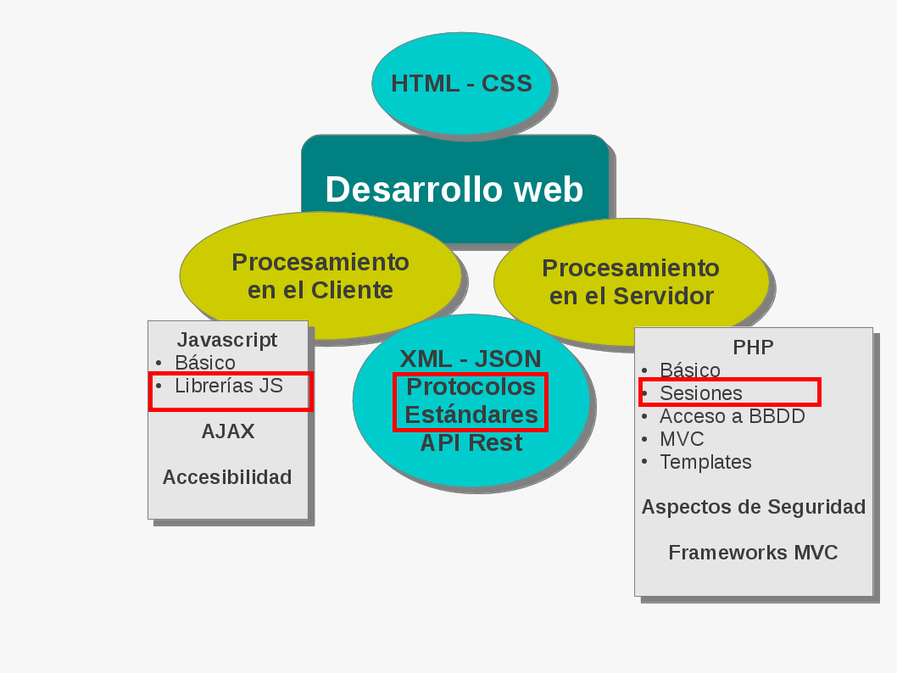
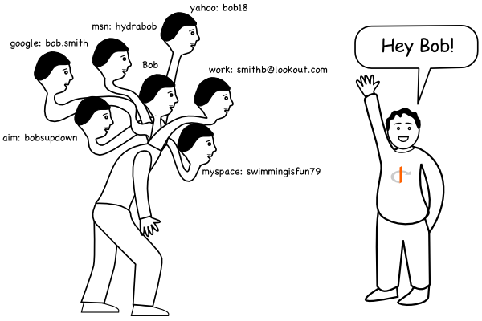
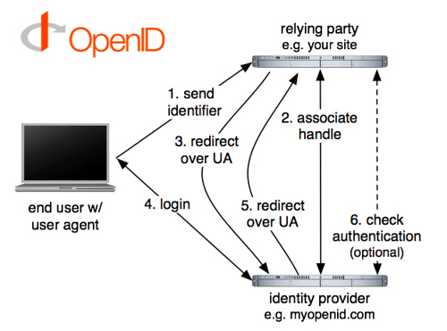
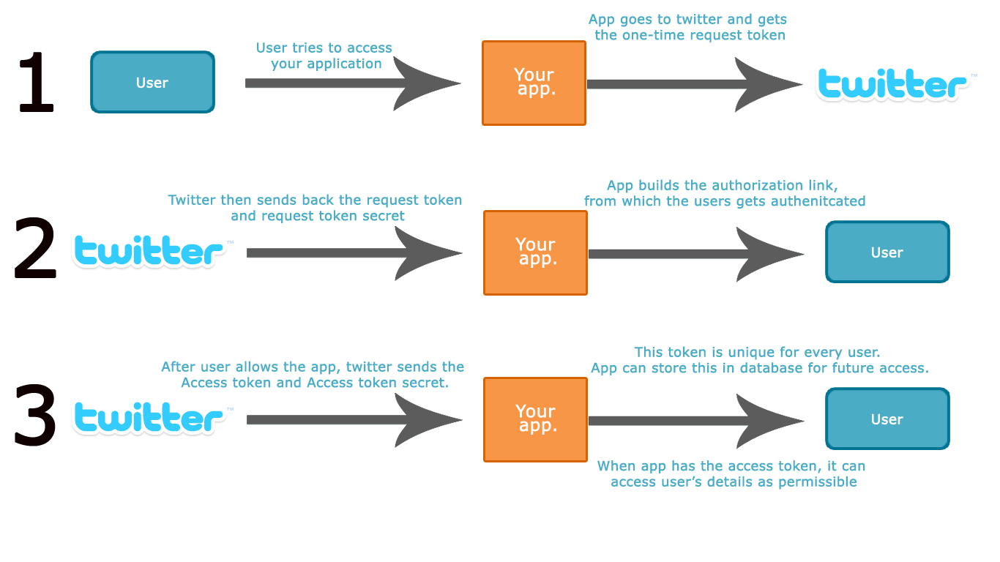
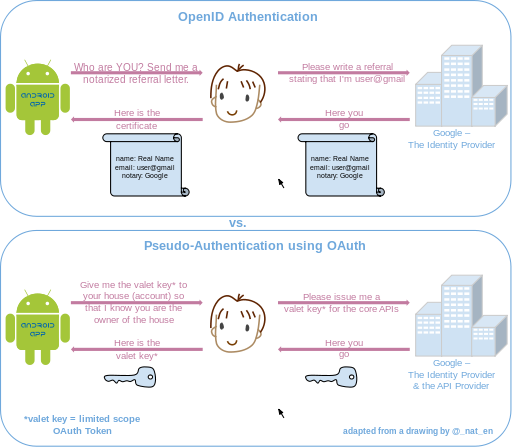
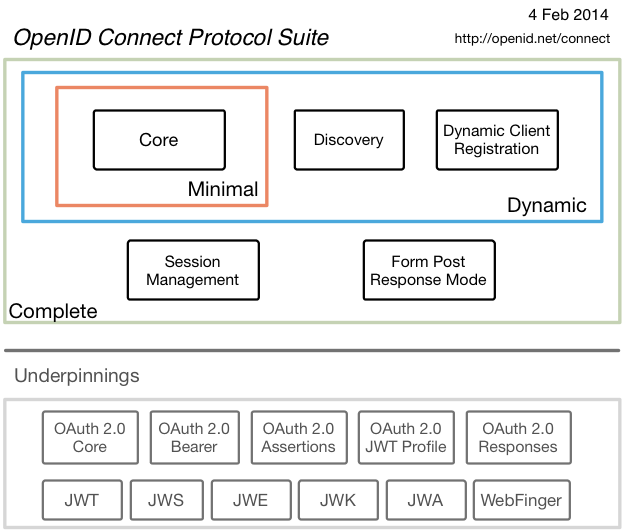

Proyecto de Software
Cursada 2014
Hoy seguimos con ...
Temario
- Repaso Clase Anterior
- AJAX
- Librerías JS: jQuery
- Api de mapas
- Identificación, Autenticación y Autorización
- Estándares:
- OpenID
- Oauth
- OpenID Connect
- APIs
Repaso - AJAX
- NO es una tecnología, sino una combinación de varias tecnologías.
- AJAX incluye:
- Presentación basada en estándares usando XHTML y CSS;
- Exhibición e interacción dinámicas usando DOM;
- Intercambio y manipulación de datos usando XML y XSLT; (podemos usar otras notaciones también)
- Recuperación de datos asincrónica usando XMLHttpRequest;
- JavaScript como lenguaje de programación.
jQuery
- Una de las tantas ...
- Muy usada.
- Se debe incluir el archivo jquery.js (descargado de http://jquery.com/download/)
- Es código Javascript:
<script src="ruta/jquery.js"> </script>
¿Mapas libres?
- Sí: OpenStreetMap
El proyecto OpenStreetMap
- OpenStreetMap es Open Data (un servicio de datos de acceso libre), con licencia Open Data Commons Open Database License (ODbL).
- La cartografía está licenciada bajo la licencia Creative Commons Reconocimiento-CompartirIgual 2.0 (CC-BY-SA).
- http://wiki.openstreetmap.org/wiki/Main_Page
- Mucho proyectos para contribuir: http://wiki.openstreetmap.org/wiki/Develop
- Rutas: http://map.project-osrm.org/
- Nosotros... sólo usaremos aspectos básico de la API.
Usando OpenStreetMap
- Usamos OpenLayers http://openlayers.org
- Un mapa sencillo
- ¿Ubicamos la facu?
- ¿Agregamos marcadores ?
Conceptos
- Identificación: es una secuencia de caracteres que identifica unívocamente al usuario: nombre de usuario.
- Autenticación: es la verificación que realiza el sistema sobre la identificación. Se puede realizar a través de:
- Algo que se conoce: clave de acceso
- Algo que se posee: tokens / tarjeta
- Algo que se es: huella digital, iris, retina, voz
- Autorización: son los permisos asociados al usuario autenticado.
¿Cómo lo controlamos?
En el trabajo de la cátedra:
¿Identificador?
¿Cómo lo controlamos?
En el trabajo de la cátedra:
¿Identificador? -> Id de usuario
¿Cómo lo controlamos?
En el trabajo de la cátedra:
- ¿Identificador? -> Id de Usuario
¿Con qué nos autenticamos?:
¿Quién nos autentica?:
¿Con qué nos autenticamos? -> contraseña
¿Quién nos autentica? -> la misma aplicación PHP.
¿Cómo lo controlamos?
En el trabajo de la cátedra:
- ¿Identificador? -> Id de Usuario
- ¿Con qué nos autenticamos? -> contraseña
- ¿Quién nos autentica? -> la misma aplicación PHP.
¿Quién nos autoriza?
¿Qué autorización podemos tener?
¿Quién nos autoriza?: la misma app PHP
¿Qué autorización podemos tener?: dependerá del rol del usuario
¿Cómo lo controlamos?
En el trabajo de la cátedra:
- ¿Identificador? -> Id de Usuario
- ¿Con qué nos autenticamos? -> contraseña
- ¿Quién nos autentica? -> la misma aplicación PHP.
- ¿Quién nos autoriza? -> la misma app PHP
- ¿Qué autorización podemos tener? -> dependerá del rol del usuario
Escenario
- Usuario introduce identificador y contraseña en el browser.
- Aplicación PHP valida e inicia sesión o no.
- Devuelve al usuario la vista correspondiente a la autorización correspondiente.
Limitaciones del esquema
Varios sistemas:
- Múltiples pares usuario/contraseña, uno por cada sistema.
- Se dificulta la interacción entre los sistemas, no hay confianza.
- En cada sistema nuevo se debe redesarrollar la autenticación y todo lo relacionado, por ejemplo: recuperación de contraseña.
Alternativas disponibles
- OpenID
- OAuth
- OpenID OAuth Hybrid Protocol
- OpenID Connect
- SAML
OpenID
- Usuario final: la persona que quiere acceder con su identidad a un sitio.
- Identificador: la URL o XRI elegida por el usuario final como su identificador OpenID.
- Proveedor de identidad: Un proveedor de servicios que ofrece registro de URL o XRI OpenID y proveen autenticación OpenID.
- Consumidor de OpenID: el sitio que quiere verificar la identidad del usuario final.
- Consiste básicamente en que el usuario selecciona un servidor externo (el “proveedor” de OpenID) que va a ser el que va a validar su identidad en un sistema determinado (el “consumidor” de OpenID).
OpenID - ¿Qué soluciona?
OpenID - Funcionamiento
- El usuario quiere acceder a su cuenta en un servidor.
- Si ese servidor soporta el protocolo OpenID (es “consumidor” de OpenID), solicita al usuario su OpenID (la URL externa del “proveedor” de OpenID).
- El usuario introduce o selecciona su OpenID.
- El servidor redirige al usuario al proveedor de OpenID.
- El usuario se autentica contra el proveedor de OpenID.
- El proveedor de OpenID redirige al usuario de vuelta al servidor, validando su identidad.

OpenID – Proovedores
Oauth
- El protocolo OAuth, es un protocolo de autorización, más exactamente, de delegación de acceso.
- Es decir, permite definir cómo un tercero va a acceder a los recursos propios.
Oauth - Funcionamiento
- El usuario dispone de una serie de recursos propios en un servidor (el “proveedor”).
- Un servidor externo (el “consumidor”) desea acceder a un subconjunto de esos recursos.
- El consumidor redirige al usuario hacia el proveedor.
- El usuario se autentica en el proveedor (si no lo estaba previamente).
- El proveedor pregunta al usuario si autoriza al consumidor a que utilice esos determinados recursos.
- El usuario autoriza al consumidor a utilizar esos recursos.
- El servidor externo (consumidor) consigue acceso a esos recursos.
Oauth – ¿Quiénes participan?
- Photobucket's
- SmugMug
- Twitter.
- Google.
- MySpace
- Meetup.com
- OpenSocial.
- Netflix
- Ohloh
- Iron Money
Muchos !!!!
Oauth - Funcionamiento
OpenID vs Oauth
OpenID OAuth Hybrid Protocol
- Es una extensión de OpenID que permite la integración con Oauth 1.0.
- Al mismo tiempo identificamos y autorizamos a usar recursos
Versiones
- OpenID:
- Versión 1 - 2005 - obsoleta
- Versión 2 - 2007 - obsoleta
- OpendID Connect - 2014
- Oauth:
- Versión 1 - 2006 por Twitter OpenID- RFC 5849 - 2010
- Versión 2 - Deja de ser un protocolo y se transforma en un framework - RFC 6749 - 2012
OpenID – DEMO
LightOpenID
- Site: http://gitorious.org/lightopenid
- Instalación mediante git:
git clone https://git.gitorious.org/lightopenid/lightopenid.git
OpenID – DEMO
- Ver ejemplos de OpenID:
- Librería LightOpenid:
- openid.php
- Propios con manejo de sesiones + librerías:
- login.php (si habilitamos requires usa oauth)
- logout.php
¿Qué es OpenID Connect?
- OpenID Connect 1.0 es una capa de identificación construida sobre OAuth 2.0.
- Permite al cliente verificar la identidad del usuario final basándose en la autenticación realizada por el servidor de autorizacion,
- Facilita además obtener información básica del perfil del usuario final.
- OpenID Connect permite cliente de todo tipo web, mobile, y clientes JavaScript clients.
- Opcionalmente se puede utilizar encriptación, discovery de proveedores OpenID, o manejo de sesión.
¿En que difiere de OpenID 2.0?
- Es similar en algunos aspectos pero lo hace en forma mas API- amigable.
- OpenID Connect define mecanismos para firma y encriptación robusta.
- La integarcuib de OAuth 1.0a y OpenID 2.0 requieren una extensión.
- En OpenID Connect, OAuth 2.0 esta integrado en el protocolo directamente.
OpenID Connect
OpenID Connect - En PHP:
- phpOIDC: phpOIDC is a PHP implementation of OpenID Connect, developed by Nomura Research Institute. It also includes the JWT, JWS, and JWE support.
- oauth2-server-php: A library for implementing an OAuth2 Server in PHP. Has been extended to support OpenID Connect identity provider functionality.
- Drupal OpenID Connect Plugin: Authentication to Drupal with OpenID Connect
SAML
- Site: http://saml.xml.org/
- Security Assertion Markup Language (SAML).
- Basado en XML.
- Este protocolo sirve de base para algunos sistemas propietarios de single-sign-on, pero no es utilizado por los grandes proveedores de servicios en Internet.
Volvamos a las API
¿Qué es una API?
¿Qué es una API?
- Interfaz de programación de aplicaciones (IPA) o API (del inglés Application Programming Interface) es el conjunto de funciones y procedimientos que ofrece cierta biblioteca para ser utilizado por otro software como una capa de abstracción.
- Ejemplo: librerías del sistema operativo
¿Qué nos permiten las API?
- En general:
- Intercambiar datos con un tercero.
- Aprovechar el software y/o capacidad de procesamiento y almacenamiento de terceros para utilizarlo en nuestro sistema pero sin necesariamente incluirlo en nuestro desarrollo sino sólo invocándolo.
- Los cambios en lo que está en la capa de atrás de la API no nos afectan.
- Por ej. si la API define una función listarDatos, desde nuestro desarrollo no nos afecta que la implementación de esa función cambie de usar un while a un for siempre que devuelva lo que esperamos.
Veremos hoy
- Existen numerosas APIs disponibles que podemos utilizar desde nuestras aplicaciones.
- Hoy vamos a usar:
- API que nos permite interactuar con Linkedin
¿Qué es Linkedin?
- Es una red social de contactos profesionales donde cada usuario sube sus datos laborales para ponerse en contacto con otros profesionales.
- Lugar de búsqueda de recursos para empleadores http://ar.linkedin.com/

Interactuando con Linkedin
- Mediante Plugins
- Mediante la API pero a través de PHP
- Mediante la API en Javascript
Plugins de Linkedin
Sirven por ejemplo para:
- Distribución del contenido generado por el usuario utilizando las redes que nuestros visitantes tienen en Linkedin.
- Incluir perfiles públicos de Linkedin en nuestros sitios web.
Plugins de Linkedin - Lista
- Share on LinkedIn
- Follow Company
- Member Profile
- Sign In with LinkedIn
- Company Insider
- Company Profile
- Apply with LinkedIn
- Full Member Profile
- Recommend with LinkedIn
- Jobs You May Be Interested In
Compartir nuestros webs
- Mediante el Share Plugin, tenemos la posibilidad de compartir nuestras webs en Linkedin directamente para que esté disponible para nuestros contactos.
- Esto es mediante la inclusión de scripts javascripts en nuestras páginas haciendo uso de las líbrerías de la API.
- URL: http://developer.linkedin.com/share-plugin
Compartiendo en Linkedin
Ejemplo en nuestras páginas:
<script src="http://platform.linkedin.com/in.js" type="text/javascript"></script> <script type="IN/Share" data-counter="top"> </script>
Compartiendo en Linkedin
- Algunos atributos:
- data-url: La url que se quiere compartir, si no está definida se toma la actual.
- data-onsuccess: El nombre de una función javascript a invocar cuando la URL sea compartida correctamente. Le pasa a la función como parámetro la url compartida.
- data-onerror: El nombre de una función javascript a invocar si hay algún error al querer compartir la URL. Le pasa a la función como parámetro la url que dio error.
- http://developer.linkedin.com/share-plugin-reference
Agregando perfiles a nuestros webs
- Mediante el plugin Member Profile, Linkedin nos da la posibilidad de agregar referencias a perfiles públicos de usuarios en nuestras páginas.
- Esto es mediante la inclusión de scripts javascripts en nuestras páginas.
- http://developer.linkedin.com/member-profile-plugin-reference
Agregando perfiles a nuestros webs
Ejemplo:
<script src="http://platform.linkedin.com/in.js" type="text/javascript"></script> <script type="IN/MemberProfile" data-id="http://www.linkedin.com/in/einar-lanfranco" data-format="inline"></script>
Agregando perfiles a nuestros webs
- Algunos atributos:
- data-id: El perfil público que se quiere mostrar
- data-format: inline, click, or hover. Defecto: hover
- data-related: mostrar o no el footer con información relacionada. Defecto: true
- data-text: texto que va después del icono de linkedin
- data-width: Ancho en pixeles para el formato inline solamente
- http://developer.linkedin.com/member-profile-plugin-reference
API de Linkedin
- Comunicándose directamente contra Linkedin desde PHP.
- Vemos un ejemplo de OAuth + Linkedin
Ejemplo – OAuth + Linkedin
- Necesitamos 1ero. que todo poder usar la API y para eso necesitamos las keys (tokens) para el consumidor OAuth, de la API para eso debemos registrar la aplicación.
- Obtener una extensión OAuth para PHP
- Usarlo :D
Ejemplo – OAuth + Linkedin
- Para obtener una API key y una Secret Key debemos registrar la aplicación que las utilizará en https://www.linkedin.com/secure/developer
Ejemplo – OAuth + Linkedin
- Obtener una extensión OAuth para PHP, necesitamos o redesarrollarlo o reusar algo existente.
- Opciones válidas para los diferentes lenguajes: http://oauth.net/code/
- Para PHP también hay varias opciones, utilizaremos OAuth de http://ar2.php.net/oauth.
- Instarlo mediante pecl:
- pecl install oauth
¿Recuerdan PECL?
- PHP Extension Community Library
- Sistema de distribución similar PEAR pero de componentes que extienden PHP desarrollados en C.
- Hay que bajar y compilar
Ejemplo – OAuth + Linkedin
<?php // Fill the keys and secrets you retrieved after registering your app $oauth = new OAuth("abcd123456", "efgh987654"); $oauth->setToken("abcd1234-efgh987-9988", "9876abcd-123asdf-1122"); $params = array(); $headers = array(); $method = OAUTH_HTTP_METHOD_GET; $url= "http://api.linkedin.com/v1/people/~:(first-name,last-name,headline,picture-url)"; // $url = "http://api.linkedin.com/v1/people/~?format=json"; $oauth->fetch($url, $params, $method, $headers); echo $oauth->getLastResponse(); ?>
API de Linkedin
- Javascript API Reference
- La API comunica los browser del usuario contra Linkedin.
- Qué se puede conseguir: elementos de Linkedin como ser: Profiles, Connections, People Search, etc.
- Mediante invocaciones con AJAX se reciben respuestas en JSON o XML.
API de Linkedin
- Ver ejemplos en:
- Javascript: http://developer.linkedinlabs.com/jsapi-console/
- En general: https://developer.linkedin.com/apis